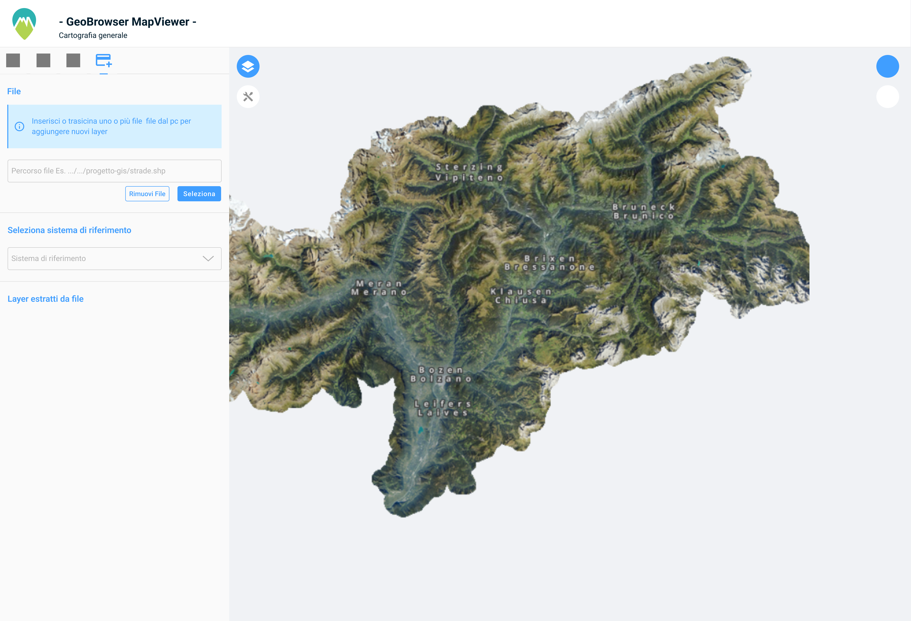

GeoBrowser MapViewer UX/UI
Progetto di revisione UX e aggiunta funzionalità richiesta dal cliente per la città di bolzano
📷 Schermate del Progetto



🛠 Processo UX
- Analisi delle necessità utente
- Lettura documenti di analisi funzionale
- Wireframing e mockup con Figma
- Testing, feedback e comunicazione con il team di sviluppo
- Redazione di documenti esplicativi sul funzionamento dell'interfaccia
- Rilascio al team di sviluppo
✅ Risultati
Il cliente avrà a disposizione una nuova funzionalità all'interno della sua webapp, con una UX coerente alla precedente iterazione, ma comunque ottimizzata e più chiara.